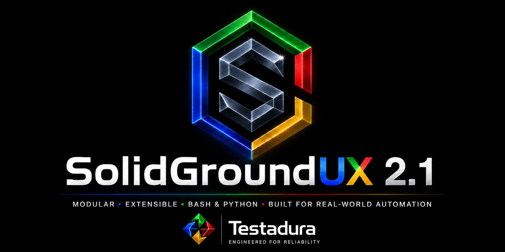

SolidGroundUX Suite

SolidGroundUX @ Heart
SolidGroundUX at heart is a Bash framework for building, documenting, and standardizing Bash scripts.
Its aim is to assist where needed, but get out of the way when ignored, while developing maintenance, configuration, and administration scripts.
SolidGroundUX has been written and tested on Ubuntu 24.04 and 26.04. Other Linux distributions may work, but are currently untested and unsupported.
It Boasts
- Standardized console and file logging
- State and configuration parameters
- A standardized and themed user interface
- Command-line argument handling
- Bootstrappers for libraries, scripts, and modules
- Tools to generate documentation, bundle releases, and publish repositories
- A Management Console integrating modules into a single menu-driven environment
What It Will Do for You Out of the Box
Out of the box, SolidGroundUX includes a number of VM management modules, primarily aimed at configuring servers and installing server roles.
General configuration includes:
- Basic configuration — hostnames and IPv4 networking
- Storage configuration — preparing and mounting storage
- Active Directory Client — joining and leaving a domain
Server roles include:
- Samba Active Directory
- Samba File Server
- NGINX Web Server
- SQL Server
- Docker
During release testing, SolidGroundUX was used to configure a complete small-business network in less than an hour:
- a primary domain controller
- a NAS
- a web server
- a SQL server
- a Docker host
That included configuring the machines and installing their respective roles.
What It Will Do for You After First Installation
SolidGroundUX also provides the framework functionality, script templates, repository tooling, and development conventions needed to build or integrate that toolbox directory you've been meaning to improve.
You can use as much or as little of the framework as you want: adopt the conventions, use the libraries, build Management Console modules, or simply take advantage of individual tools where they make sense.